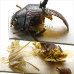
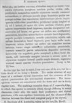

Click on images to enlarge
.jpg)
Fig. 1. Paropsis borealis type specimen, lateral view & labels
.jpg){kind=link}

Fig. 2. Paropsis borealis type specimen, lateral view
{kind=link}

Fig. 3. Paropsis borealis, description
Name
Paropsis borealis Blackburn, 1896
Corresponds to
In my view, this is likely the same species as Ta08 (= T. sjoestedti Weise), a species that is very similar to T. exarata (= P. asperula), and does tend to have finer pronotal puncturation than the latter species. The size (8.5 mm) is somewhat on the small side for a female specimen of that species. The fact that the scutellum is punctured would be also unusual, though some very fine punctures can be present on the scutellum in that species. The other possibility is that this is a different northern Australian species altogether that I have not yet seen.
Diagnosis and Notes
Blackburn (1896) deals with T. borealis as part of his 'subgroup iii' (i.e., those species without "strongly marked characters", whose greatest height is not or scarcely in front of the middle of the elytral margin and whose elytra are not depressed under the humeral callus). Within that group, he characterises it as:
AA. No postbasal impression on disc of elytra;
B. Elytral verrucae concolorous with or darker than general surface;
CC. Puncturation of prothorax very sparse and fine.
From Blackburn's notes, the "markings resemble those of P. asperula, Chp.", and those dark markings can indeed be seen on what remains of the type. In the other characters that he uses to distinguish it from P. asperula, he mentions finer pronotal and elytral puncturation and the absence of a distinction between the discal and marginal parts of the elytra. Blackburn indicated that the scutellum is punctured ("punctulato").
Type specimen
Location: BMNH
Label data: /“Type” (red-bordered circle)/ “3095 N.T. T”/ “Blackburn coll. 1910-236.”/ “Paropsis borealis Blackb.”/.
Female (or so Blackburn surmised, as the specimen had lost its tarsi when he examined it); carded specimen; Size: approximately 8.5 mm (4 lines, as given by Blackburn); the specimen has been severely damaged by Anthrenus at some time in the past.
Original description
Translation of original description (Figure 3) by ChatGPT, 04/2026:
Somewhat ovate; fairly strongly convex, the greatest height (seen from the side) situated about the middle of the elytral margin; shining. Reddish, with the margins of the prothorax, the scutellum, a common ante-median spot of the elytra, and on each side a spot placed near the humerus, and also the underside of the body (this spotted), indistinctly pitchy. Head sparsely, somewhat strongly punctulate. Pronotum about 2¼ times as broad as long, from the apex scarcely dilated beyond the middle, not transversely impressed behind the apex, sparsely and unevenly somewhat punctulate in small clustered groups (at the sides rather coarsely and fairly densely but not confluent); sides less strongly rounded, not flattened; posterior angles rounded. Scutellum punctulate. Elytra not depressed beneath the humeral callus, not at all impressed behind the base, less strongly but fairly densely and fairly evenly (toward the suture anteriorly more finely) somewhat serially punctulate; furnished with some small wart-like elevations arranged in somewhat serial rows; interstices scarcely rugulose; marginal part not distinct from the disc; inner margin of the humeral callus slightly more distant from the suture than from the lateral margin of the elytra. Basal ventral segment sparsely and obsoletely punctulate. Length 4 lines [~8.5 mm], width 2⅘ lines [~5.9 mm].
References
Blackburn, T. 1896, "Revision of the genus Paropsis. Part I", Proceedings of the Linnean Society of New South Wales, vol. 21, no. 4, 637-693 (page 691).
Copyright © 2026. All rights reserved.